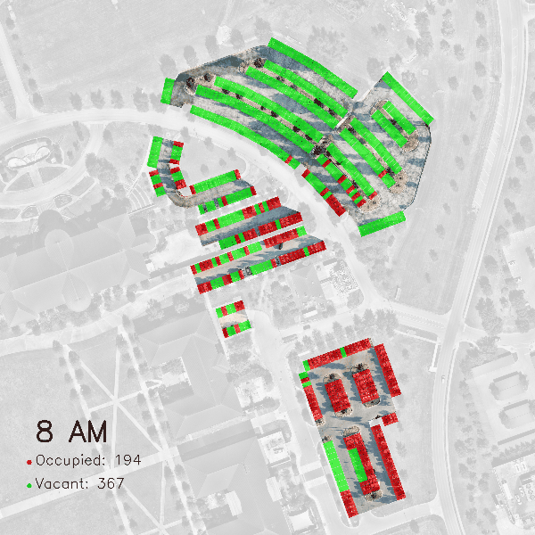
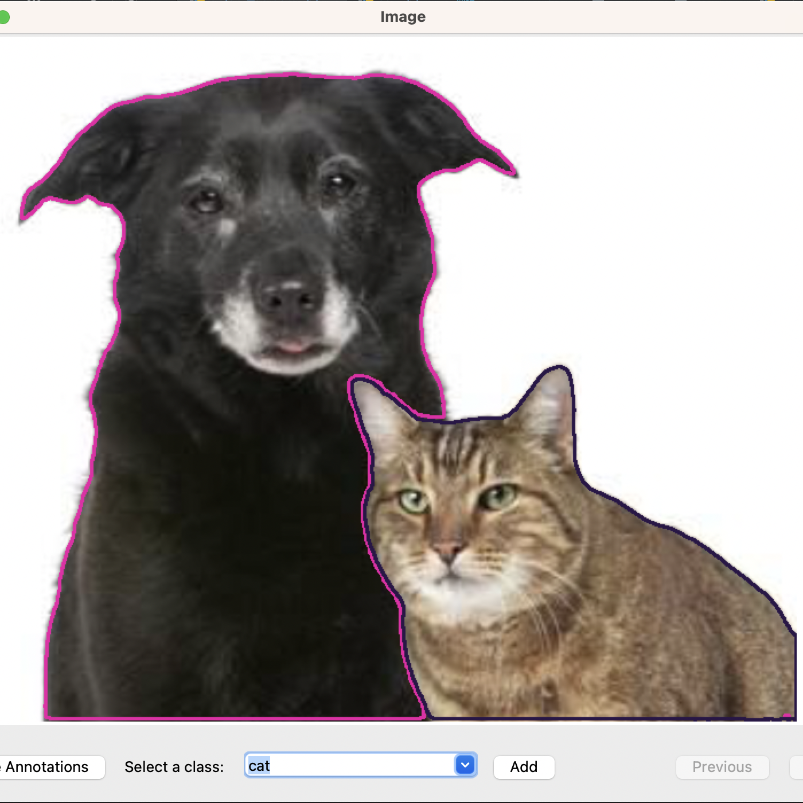
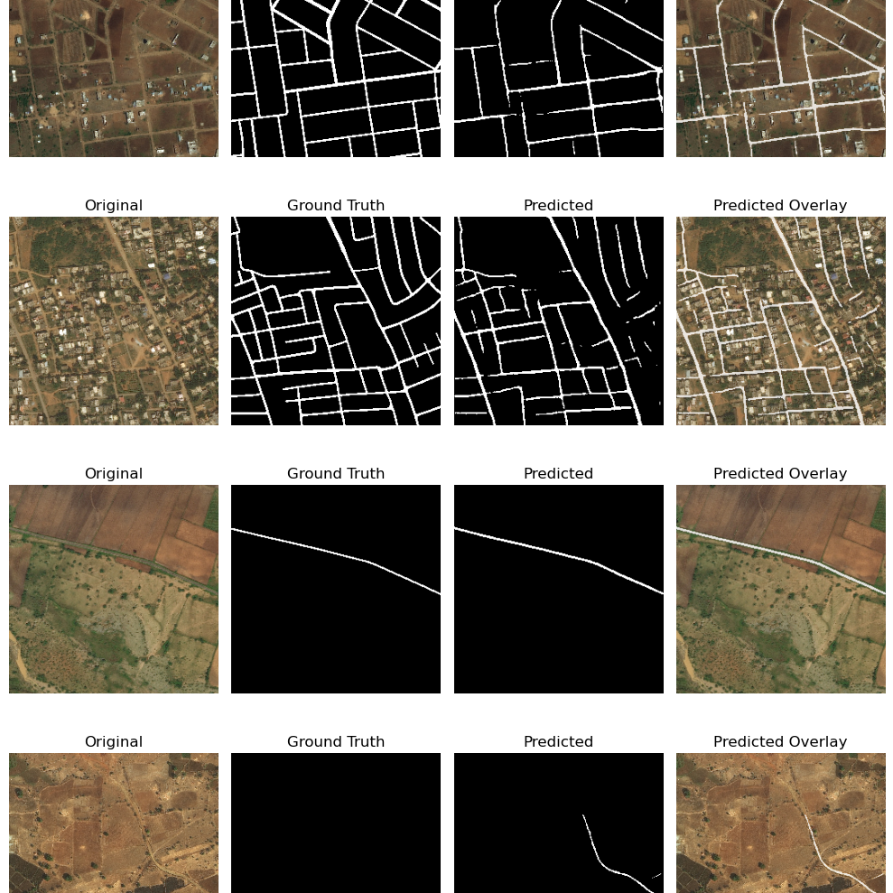
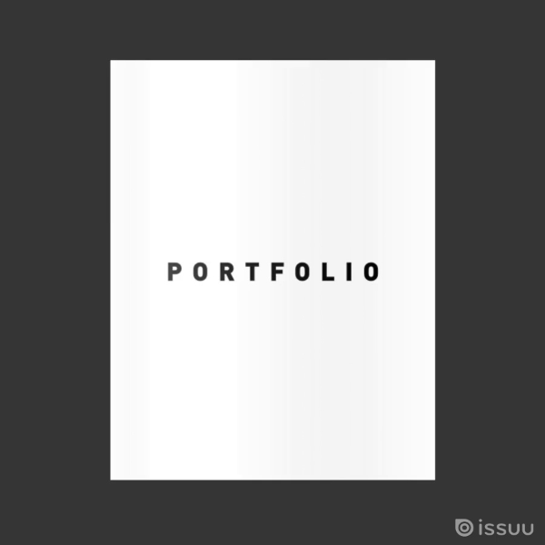

TUNG DINH
AI - Machine Learning - Computer Vision - Architecture - Computational Design
Hi, I build machine learning and computer vision applications. Currently immersed in mastering object tracking, localization, and Kalman filter techniques. My interest lies in the intersection of AI, Robotics, and Architecture.
🖥️ Projects
Machine Learning / Computer Vision
▶
Parking Occupancy Analysis

Monitoring parking occupancy at scale using drones and AI.
Object Tracking with Kalman Filters
Track and predict trajectories of multiple cars in a video with YOLO and Kalman Filters.
SAM-notator

An automatic annotator tool that speeds up the process of selecting an object and its label.
Road Extraction

Extracting road network from satellite imagery where GIS data is unavailable.
Computational Design
▶

Architecture
▶